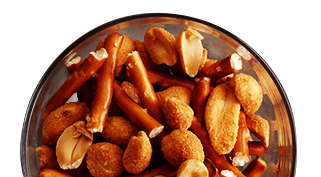
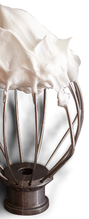
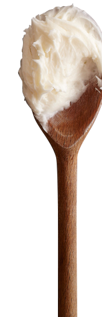
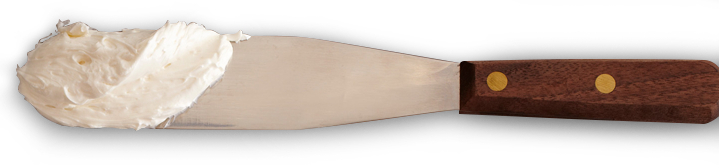

CUPCAKES!
GO-TO
CUPCAKES
SUPER BASIC AND COMPLETELY FOOLPROOF CHOCOLATE AND VANILLA CUPCAKES AND FROSTINGS TO RELY ON
- Vanilla Buttercream Frosting
- Chocolate Buttercream Frosting
- Go-To Chocolate Cupcakes
- Go-To Vanilla Cupcakes
- Vanilla Mix-Ins
- Chocolate Mix-Ins
- Marbling Techniques
THE GREAT AMERICAN
CUP-CAKEOVER
FAVORITE CLASSIC DESSERTS REIMAGINED THROUGH CUPCAKE-COLORED GLASSES
FROSTING GUIDE
ICING
on the(CUP)CAKE
NO CUPCAKE'S COMPLETE WITHOUT A TASTY FROSTING TOPPER – CHOOSE ONE HERE
Cream Cheese
Swiss Buttercream
Mix-Ins
Alton's Recipes
Seven Minute




GO-TO CHOCOLATE CUPCAKES
Ultimate: Moist and deeply chocolatey, these cupcakes are divine with virtually any frosting, but they are are also delicious with a dusting of confectioners’ sugar.
RecipeGO-TO VANILLA CUPCAKES
Golden memories: Smelling sweetly of butter, sugar and vanilla, these classic little cakes bring you right back to when you were a kid and Mom baked you birthday cupcakes.
RecipeVANILLA AMERICAN BUTTERCREAM FROSTING
Frosting of champions: It doesn’t get any easier, more delicious or more classic than this sweet buttercream scented with vanilla.
RecipeCHOCOLATE AMERICAN BUTTERCREAM FROSTING
Chocolate love: The quickest version of buttercream, this glossy topping looks cute swirled into place with an offset spatula or piped on with a piping bag and star tip.
RecipeGO-TO CHOCOLATE CUPCAKE MIXINS
GO-TO VANILLA CUPCAKE MIXINS
GO-TO MARBLE CUPCAKES
Can’t decide? Make chocolate and vanilla — these are fun to look at, fun to make and, best of all, fun to eat.
RecipeBROWNIE CUPCAKES Á LA MODE
Deep and dark: Fudgy and brownie-like, these cupcakes would be excellent candidates for a gathering with a toppings bar.
RecipeKEY LIME PIE CUPCAKES
Full of zest: Enticing from your first glance, these cupcakes are even better once you bite into their delightfully creamy center. They perfectly capture a Key lime pie’s signature combination of sweet-sour citrus and cool lusciousness.
RecipeBOSTON CREAM PIE CUPCAKES
Eat one if by land: Sandra Lee included everything you love about Boston cream pie, but made it instantly more irresistible with its hand-held proportions.
RecipeCHEESECAKE CUPCAKES
Small wonders: These cupcakes have all the richness of cheesecake, but in a sweet little package, complete with a creamy frosting and graham cracker crust.
RecipeS'MORES CUPCAKES
S’more, please: Tuck into this campfire treat in cupcake form. Essentially a seven-minute frosting, its topping toasts up beautifully under the broiler for the most authentic fireside flavor.
RecipeRED VELVET CONE CAKES
We all scream: The Neelys bake these cupcakes right inside the wafer cones, making them extra-fun to eat out of hand. To enhance the theme, use an ice cream scoop to top each cupcake with a scoop of frosting. Or mix some mini chocolate chips into the frosting to evoke chocolate chip ice cream.
RecipeCHOCOLATE CHIP COOKIE CUPCAKES
Dunk and crunch: Pour the milk and revel in this celebration of our national cookie — with an actual cookie surprise buried within.
RecipePEACH COBBLER CUPCAKES
Just peachy: With a crunchy crumble topping and juicy peaches, these cupcakes give you a little taste of Georgia kindness — no matter where you are.
RecipeTIRAMISU "CUP"CAKES
Grande fun: With fresh cake (in place of ladyfingers) soaked in coffee and coffee liqueur, and a mascarpone-frosting froth, these adorable cups turn traditional tiramisu on its head.
RecipeALTON'S FROSTINGS:
TWICE AS NICE
Try your hand at variety. Whether you prefer a glossy glaze-like chocolate ganache or a traditional royal icing, you’ll find the deliciousness in the details: Follow Alton’s simple step-by-step tips for results that can’t be topped.